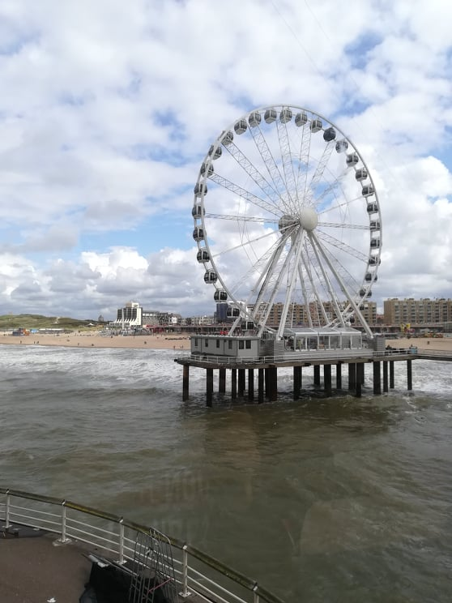
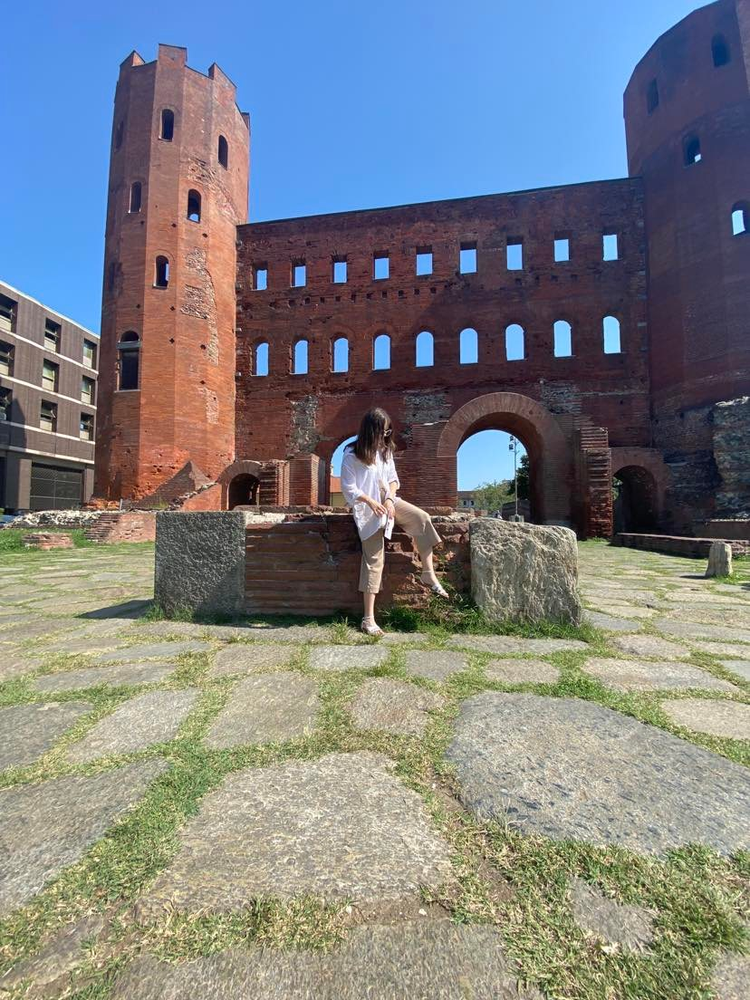
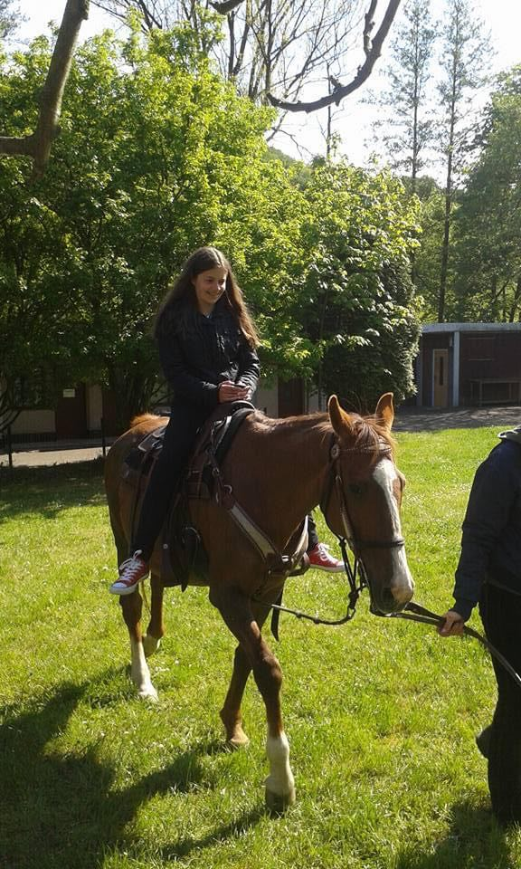
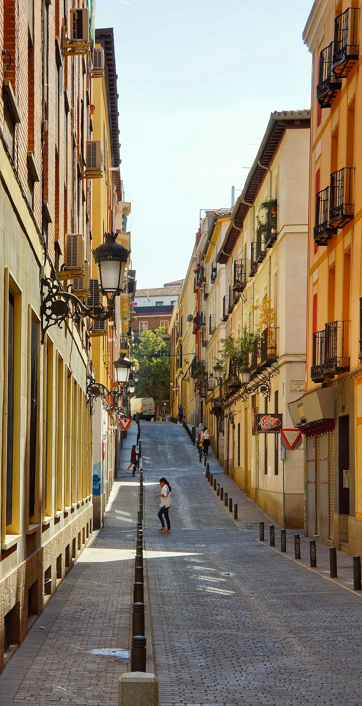
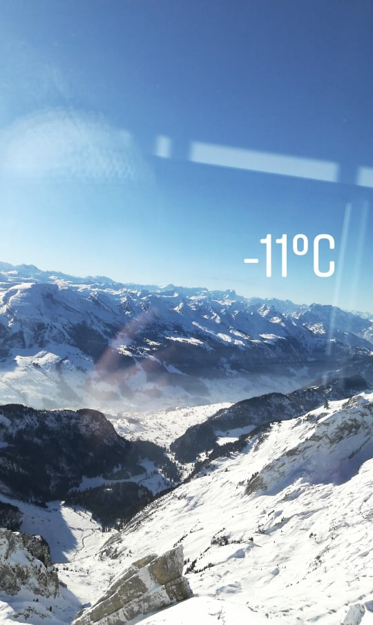

Check out my travel adventure, so far, I have visited 14 countries. Most of them were Erasmus+ projects and others were just
trips around. As from 2016 I started working with Erasmus+ projects, my first one was in the Czech Republic, we had a language
camp where we have given the opportunity to get better in speaking English fluently. The next trip was in Spain in 2017 and was
also a language camp project. In 2018 I was selected to be part of the intercultural exchange where our aim was to provide
activities and opportunities in the fields of non-formal education, promoting healthy lifestyles, arts and culture, and civil
society that develop positive values and attitudes among young people, you can read more about the project here. In 2020 I was
selected to be a leader on my own project which I worked on nine months, you have all the details about it here. The last exchange
that I attended was in Italy in 2021, its aim was to develop an attitude towards acceptance and openness to the new and different,
and prevent the phenomenon of radicalization among young people.

The Hague, Netherlands

Torino, Italy

Odry, Czech Republic

Cadiz, Spain

The Alps, Switzerland
These are some of the pictures that were taken during the projects. I am glad that I had the opportunity to be a part of them.
I am always open for attending and working on projects similar to these.
I also love to travel and explore something new and different, and collect as many experiences as I can.